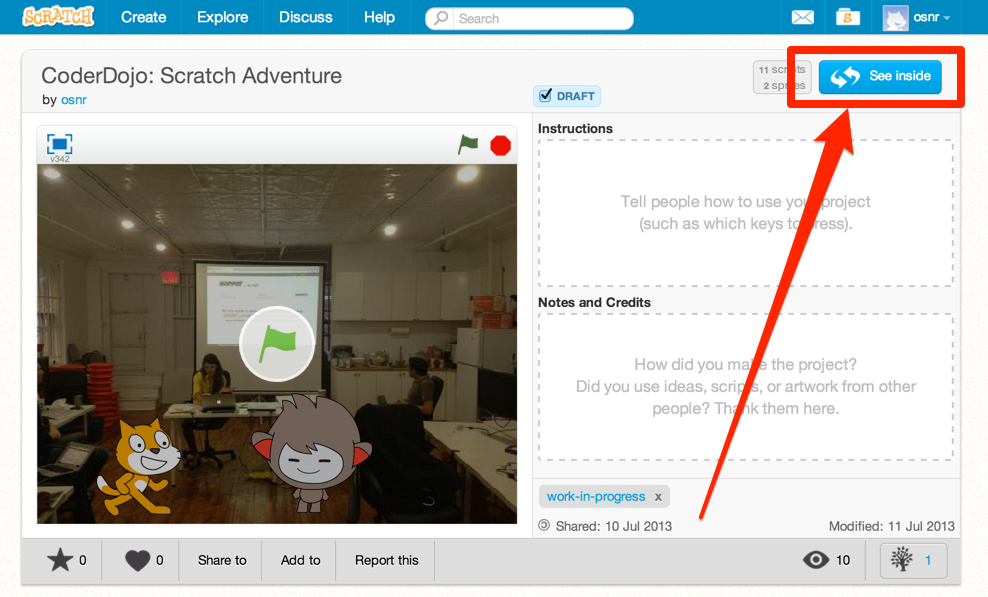
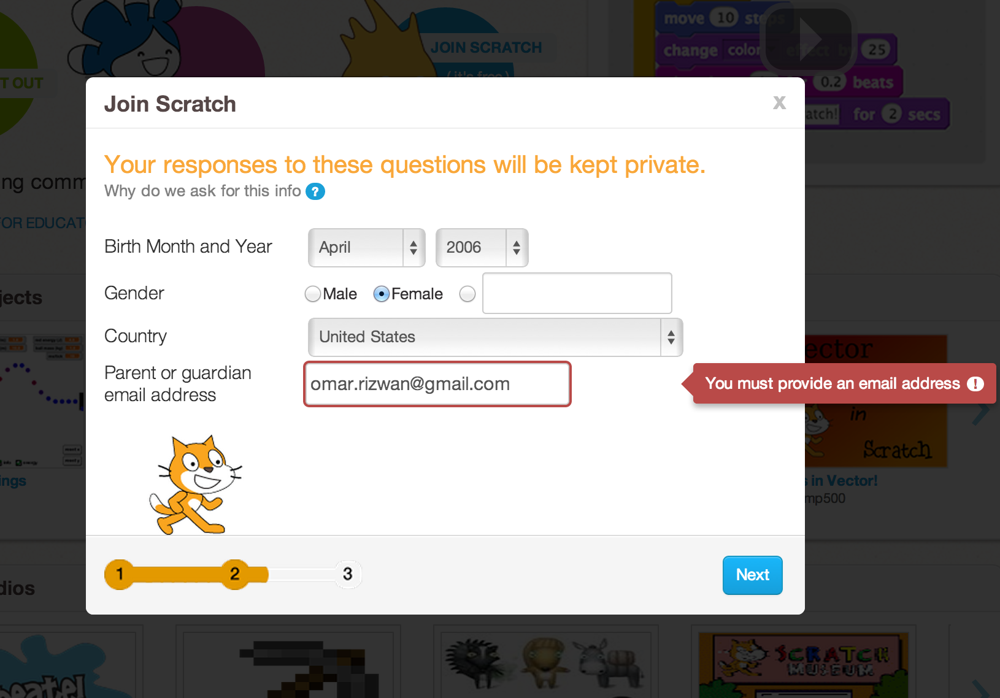
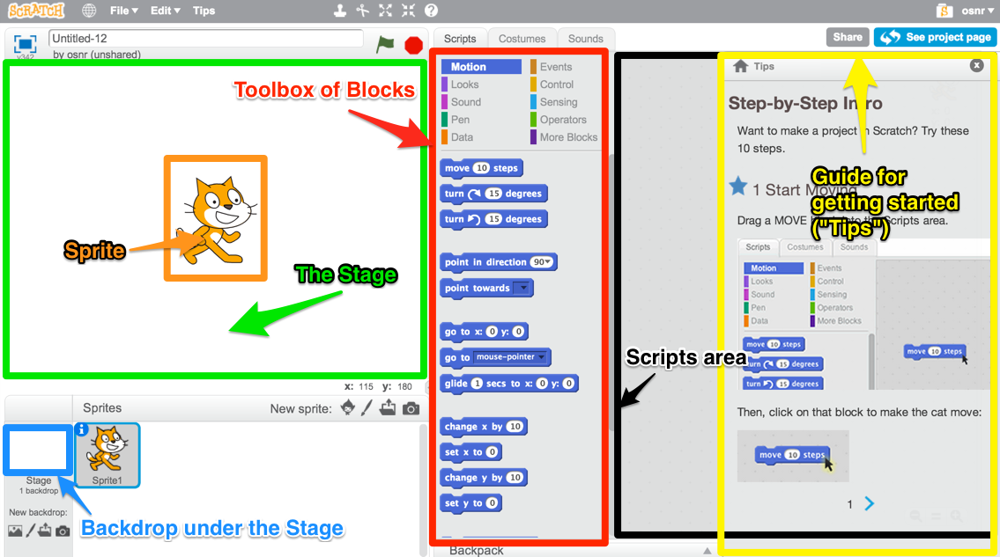
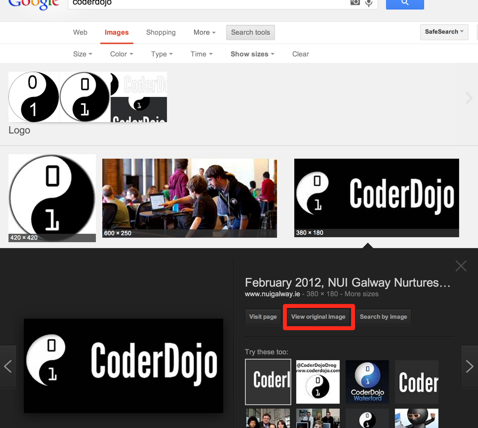
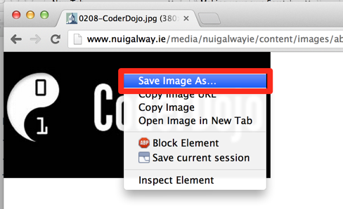
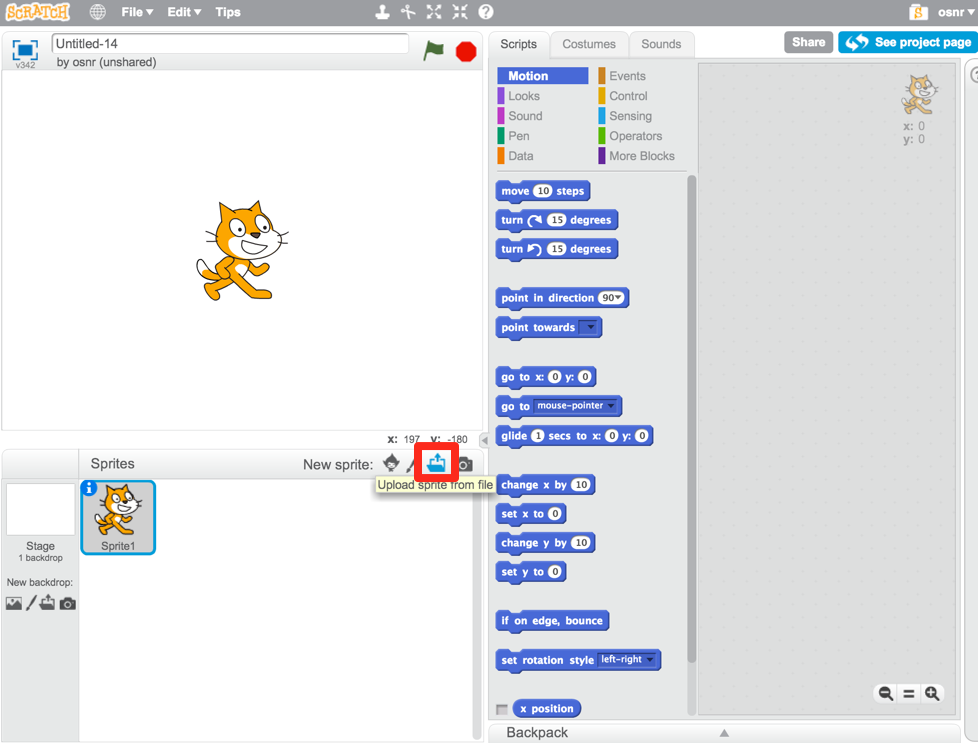

Making your own Scratch adventure: a guide
Table of Contents
- What you can do
- Planning ahead
- Starting from Scratch
- How do I…
What you can do
Today, we're going to write a story, sort of like that (but not the same – make it about whatever you want! add effects!). We'll use Scratch.
(Actually, that story is written in Scratch, and you can find out how I wrote it by going to its project page on the Scratch website. Click "See Inside"!)

See inside and find out how Scratch projects are made
Planning ahead
Now we'll think about what we want to do, so we're not <flailing around?>. Get some paper! Plan out what you want to do. <Subst in Ricky's worksheet>
<Have example of different kinds of plans? storyboard for some? game mechanics for others?)>
<Possibly examples of game concepts from Pedro's email (see Examples section below)>
Try to answer these questions: <turn into worksheet?>
- What's the Mission?
- Who is the main character?
- Where is this taking place?
- Who is the main enemy?
- Or list possible dangers.
We came up with some ideas for games; maybe they'll inspire you, or maybe you'll come up with something totally new.
Adventure game
Mission: evade the Zombies
Hero: Knight (Scratch)
Needed items: sword, axe,
Narrator: Parrot (explain the mission)

Zombies
Do not collide against the moving Zombies (moving horizontally back and forth), some are stationary.
Copy & Paste few zombies (repetition and use of random positioning?)
Story game
<image of storyboard>
Group discussion
Cool, you have a potential idea.
If you want, share your idea with other people in your group, including your mentor. Maybe someone will like it and want to work with you! Maybe someone will be interested and want to follow your story as you make it.
It can't hurt, even if you end up deciding to go your own way!
Starting from Scratch
Okay. Now that we have some idea of what we might want to make today (feel free to change your idea later, though), let's start making stuff.
Get a Scratch account
We need a Scratch account. (You could start without making a Scratch account, I guess, but then you wouldn't be able to save. And that would be annoying.)
Head to scratch.mit.edu and click "Join Scratch," then follow the three steps. (You might need a parent's e-mail address if you're under 13 – maybe call them over for this part if they're here.)

Making an account of my own
Open up Scratch
Okay. Now we can get to the fun part. Open up Scratch itself!

Parts of Scratch
It has a little guide for getting started – the Tips. If you want, follow those Tips on the right side of the screen, then play around; if not, just X them out and play around right away! Drag some Blocks from the Blocks Toolbox to the Scripts Area (the gray area partly covered by Tips).
I'll give you a couple of minutes to play.
…
…
Well, that was fun. Now what?
Now you can start building your thing! I recommend you start with one scene – just get all the pictures and objects in the right places. But it's totally up to you.
If you don't know how to do something, I have some instructions on how to do stuff. You can also check out some other resources.
How do I…
insert a picture from the Internet?
Not too bad.

Find it on Google Images first, then open the original.

Save the original image to a file somewhere on your computer. (Remember where you put it!)
Now we have a question. Do you want it as a Backdrop underneath other stuff, or do you want it as a Sprite?
Make it a Sprite!
Open up your Scratch project.

That image you just saved to your computer? Upload it back into Scratch with this button.
Make it a Backdrop!
make different things happen over time?
What does that mean?
So far, we've drawn some stuff on the screen. You could just use Paint or Word or something to do that. It looks cool, but we haven't done anything really special yet.
Scratch is more powerful than those because:
- You can make what shows up on the screen change over time. (Okay, what's the big deal? You could draw a flipbook or something, too. It's just animation.)
- You can make the changes depend on what the person running your program does. That's what computer programming lets you do, in Scratch and in other languages. Somebody else runs your program, and they don't just get some prewritten result every time. They get to put some input in, and see something different depending on what they put in.
OK. How?
The right side of the screen in Scratch has a toolbox with some Blocks, and a (currently empty) Script Area where you can put those Blocks. The Blocks in the Script Area are your program. They're what Scratch will run, and they can change what shows up on the Stage.
Blocks are like instructions for Scratch to do something to the screen.
Link them to event blocks.
add a song or music I like?
This is a similar process. Get the MP3.
Making your own
Or you can make your own music.
get things to disappear, appear, or move around?
Looks blocks.
make characters talk to each other?
Broadcast blocks (or timing).
change the background?
Backdrop.
move between different scenes?
Backdrop.
do something not listed here?
Etc. If I didn't explain anything well, it's my fault.
- Find it online.
- Step-by-step intro ("Learn how to make a project in scratch"): http://scratch.mit.edu/projects/editor/?tip_bar=getStarted
- Scratch 2.0 PDF: http://scratch.mit.edu/scratchr2/static/__1372902973__//pdfs/help/Getting-Started-Guide-Scratch2.pdf
- Scratch cards: http://scratch.mit.edu/help/cards
- Short video tutorials: http://scratch.mit.edu/help/videos
- Tracy's blocks
- Ask kids near you!
- Ask a mentor!